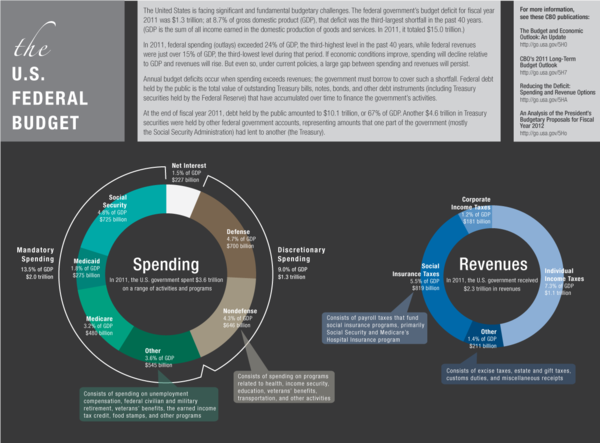
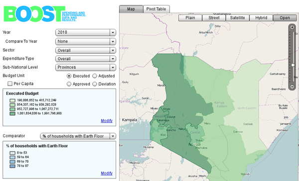

Selecting methods and tools
The key to using data to tell people about your issue is to choose a really good story. The key to finding a good story is to formulate the right question for your audience.
Be guided by what interests you, as this stands a good chance of interesting other people. If you don't feel confident about your judgement then try lots of things that you consider interesting and see if it makes impact on the people you care about. Are they sharing your work on social media? Do they email you or link to your work from their own sites? If the answer is yes then you are really making good data stories.
Of course rigour and accountability are essential and you should always include links to your methodology and data, but it doesn't need to obscure your headline. Telling a story is the difference between people not reading your work and making it all worth the effort.
If you've already got data products that you want to share, try disseminating them in a couple of different ways. In addition to the methods outlined below, try preparing primers or manuals for other groups that want to start working with datasets that you may be particularly experienced with. You can also organize workshops, meetups, and webinars to familiarize groups with the data you work with. If grassroots issue groups can internalize your data products and present them in a contextually relevant way to their user base, then both groups have gained something from the partnership.
This is a collection of (hopefully) inspiring examples where groups have connected to the public directly through their websites, social media, or through the mainstream media. If you are interested in making media but don't have the capacity then fear not! Check out the first section of the book on reaching out to other organizations for help or running your own project.
Communicating via the web
If you are creating or adding to a website that you want citizens to access directly then here are some of the ways you can really use budgets or spending data to increase the value of your organisation.
Firstly we highly recommend that if you have some really great data, that's a story in itself, then don't waste any time - put the data up on your website and write a great story to go with it. Make sure the full dataset is available to download, ideally in a couple of formats like csv and json, and explain your methods. Then encourage your supporters to use and play with the data, add comments and talk in your community site or social networks.
If you feel your data needs that little bit more work to make it interesting or digestible, here are some examples of portals, interactive infographics, images, reports, and a searchable dataset.
Infographics and images
The art of the infographic is to make the complex look simple. This can be invaluable if you can communicate huge amounts of data in one picture. It is always recommended, both as a boost to your credibility and to allow others to extend your work, to publish the complete data needed to recreate the image. This allows your community of supporters to create their own visualisation and check your work easily before republishing it.
Below is an infographic summarizing the history of the US Federal Budget, by the Congressional Budget Office (CBO) /http://www.cbo.gov/publication/42636). It shows the budget over time and as a percentage of GDP, and in the context of total spending and revenue. This was used to emphasise that the federal government's budget deficit for 2011 was the third-largest in the past 40 years:

Images of spending
This "binder full of burgers" infographic was created to show the sandwich of spending for Barack Obama's 2012 presidential election campaign. The data is not especially novel but the graphic is fun and engaging.

Interactive infographics
An interactive infographic can add even more data to a single screen full of images. A simple example is a bar chart where hovering over a bar with the cursor results in a dialogue box that tells more detail, like the exact value of that bar.
It seems there are two types of interactive graphics that work very well. One is where the user finds their own path through a complicated landscape of data. For example a map of the world where you can zoom in to details of each country or regions within a country and discover some facts about that area. The other is where the infographic guides the user through a story. For spending data in particular, people often like the ability to "drill down" in an infographic, or in other words, start with a high level view of the data and then gradually view more detail about different sections that they can select.
In recent years we have seen the quality of interactive infographics grow and become easier to produce. Anyone with a Google account can now make maps (http://www.google.com/drive/start/apps.html#fusiontables) and charts (https://developers.google.com/chart/). Equally, the tools to manipulate and display data in more sophisticated ways have become more accessible with efficient and usable javascript libraries. Using these libraries requires a bit of technical skill, so you may want to reach out to other organizations, as described in the first section of this book.
Budget interactives
An interactive graphic gives you the perfect opportunity to allow people to choose their own budget. This interactive chart called Citizen Budget is from the non-profit Open North. It shows Canadian budgets and gives citizens the chance to play at being the official controller. They can cut spending in any area they choose but the budget has to balance.

Spending interactives
The World Bank have a spending database called Boost. It's a technical collaboration between the World Bank and various governments to digitize their spending data. It is especially targeted at countries that wouldn't otherwise have the technical resources. One of these countries is Kenya and the data has been displayed to great effect here:

Online reports
A report allows you to expand on points and show lots of different views of a dataset that would be just too cluttered on one infographic or in an interactive. A report is a good place for a step-by-step guide through a more extensive study.
An example of a very short report is from Enough is Enough (EiE), a coalition of Nigerians aiming to enhance citizen engagement and good governance. Their EiE report on the state of the Nation shows a very concise summary of the major spending corruption stories they identified that year, along with some links to sources.
Podcasts and videos
A well made podcast will almost certainly be shared widely given the right push. Describing the significance of your data and getting expert comments is so much easier to digest in a podcast than a long report - even if they are both very well written. Again, the technology to make radio has radically reduced in price in recent years.
The NPR Planet Money podcast rose to fame for its incredibly accessible, award-winning coverage of the 2008 Global Financial Crisis. Planet money now covers financial issues all over the world on its weekly podcast.
Online portal
A portal is suitable for a large and relatively frequently updated dataset. People in your community can then build web applications to pull the data. An example of a portal that might be used to add more context to spending data is the police.uk website. This is a complete view, updated monthly, of crimes committed in the UK, with details down to street level. The site also provides an API[15] which you can use to add new data to an app showing, for example, spending on police with crime levels overlaid on map.
Mobile technologies
There are a few free and open tools that will allow you to display your data through a mobile phone or tablet app. AKVO is a non-profit foundation and they describe (http://www.akvo.org/blog/?p=4822) how their AKVO FLOW (http://www.akvo.org/blog/?p=4836) platform works using free open source software to communicate your data through an Android mobile app.
Social media
Building a community around your cause in general and data analysis in particular is really valuable. Setting up a mailing list and creating a space to collaborate like on a wiki can lead to some really interesting social connections at relatively low cost can allow you to work with some really devoted and knowledgeable people. Some nice examples are the OKFN mailing lists (http://lists.okfn.org/mailman/listinfo) using Mail Man - http://www.gnu.org/software/mailman/index.html), wikis (for example http://www.wikispaces.com/).
There are also the big social media companies like Twitter and Facebook of course! These are great for reaching large numbers of people who have anything from a passing interest to complete devotion to your cause. When you join create a Twitter account or Facebook page with the name of your organisation. The strategy when joining these is to contact some high profile tweeters or facebookers to take on your cause or message. Make sure there are plenty of links back to your website when you Tweet or post to Facebook or other platforms. If you have a data release then create a package of the data, the story and any other resources (image downloads, reports etc) on a webpage and then tweet a link out with a link to that page. The same principle applies with Facebook.
Communicating with the press
When writing a press release keep it simple and very relevant to a story the journalist might like to run - leaving descriptions of your organisation or how you got the data to the very end or ideally include only a link to a relevant webpage. To be relevant you need to hook into something in the news cycle (http://en.wikipedia.org/wiki/24-hour_news_cycle) or offer up such a strong story it would create news. If it is the latter, then you might want to give it to a number of newspapers with an embargo so they will release the story all at the same time to create a really big impact.
If you are looking for news hooks then at the simplest level the data can relate to the time of year, maybe when there is a new financial phase or an election and the news is focused very much on spending and budgets. For example if it's a complete cleaned up version of all public spending, or budget or all the pension funds, just showing this data qualifies as something a journalist would find interesting - they may even have an in-house team working on the same thing so will be pleased to have the data quicker. Here the press release can be quite simply describing the data if the data is detailed and relevant enough to stand alone, along with a link to your portal and some instructions for using it, or a download of the data.
If you're wondering about how much extra work you need to do to present your data before sending out a press release then the same principles apply as when adding content to your website. If you have a great story from a great piece of analysis or just great data alone, then send the data and the story in a concise form with links through to the methodology on your website.
One final tip before describing what you might include in your press release: when working with journalists be sure to get a link to your website included in the piece.
Including images
If you do have a dataset with a story that would really benefit from an infographic then add it to the press release. Or if you have a mobile or tablet app, a podcast or report then add a screenshot of the most enticing view of it too. Ideally attach a small copy of the image to the email and give a link to a higher resolution version on your website.
It's likely the newspaper's graphics team will create a version in the newspaper's style so you should include the data for your graphic in a usable format (no PDFs).
The journalist may also choose to use your graphic as it is, so be sure to add a small discrete copy of your logo in the corner of the image or other citation embedded in the image.
Including an interactive infographic
Equally you may have made a descriptive interactive, in which case you might want to make it 'embeddable' on other websites. You may also ask for the news site to link back your own website, or include a link in the embeddable portion of the infographic.
Communicating with governments
In modern democracies we would advise CSO's to influence government decision making with evidence-based, factual, easy to understand policy proposals. These proposals can be related to almost any particular subject, from energy efficiency, labour policy, immigration, minority issues to public finance. Government relation to these policy proposals can be decisive in times of elections, and for this reason they cannot ignore them. Government capacity is limited, so you might find it takes a while to get a response from them.
For CSOs it is important to differentiate between Government's general goals, and policy specific goals. For example, every responsible Government has a general goal of maintaining a balanced fiscal policy. As we get more specific about this goal, stakeholders' opinions begin to differ. Governments are rarely very clear about their policy goals, as this would make it easier for CSOs to keep the Government accountable. Real policy goals can also be very different from what Government declares as its policy goals. For example, every Government is against tax evasion, but in many cases Governments indirectly support them, one way or another.
Common themes for communicating
To summarize, the key themes are: have a great story, be clear, be connected to lots of other people and be accountable by publishing methodology and data. These apply equally if you are communicating with the public or the media.
Being clear is making easily repeated points with the data, or describing a juicy data set in one sentence. If you can make the presentation fun, fascinating, or just beautifully simple then you are on to a good thing.
Being connected is making things technologically very shareable and then facilitating the spread of your message through your own community of supporters and social media.
Being accountable is being completely transparent about how you obtained, cleaned and analysed the data. This method has to be explained very clearly too, and the standards maintained for every release until your CSO has a good reputation of trustworthiness. But please don't let concerns about trustworthiness stop your CSO from exploring and having fun with the data in the first place, which is really something you need to consider when settling on a data story.
The final points are wherever possible, have fun telling your story and don't be afraid to experiment with different styles and tones but don't delay if you have a great dataset on your hands - let the world know!